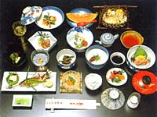
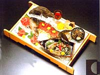
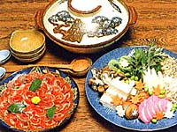
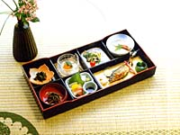
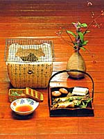

| 当館自慢の料理 | |
| 天の恵みの素材を主人自ら材料採り選びから立ち働いて この季節、この機会ならではのものを皆様にお出しています。 わらび、うど、ぜんまい、ふき、ふきのとう、たらのめ、つくし などを使った山菜料理、鮎や山女、鰻などの川魚料理、 季節を映した懐石料理を存分にお召し上がり下さい。 |
|
|  |  |
| ■ 料理のご紹介 |
| 料理内容 | 会席料理 | ||
| 地の素材 | 山菜（こしあぶら、わらび、うど、ぜんまい、ふき、ふきのとう、たらのめ、つくし、わさび他)、椎茸、皮茸（コウダケ）、松茸他 | ||
| 川魚（鮎、、山女、鰻、他）、海の幸(カンパチ、えび、蛸他) | |||
| 広島牛、猪、鴨等 | |||
| 献立の変更 | 年４回 | ||
| 標準料理 | ■ ４／１〜９／３０ | 旬の山菜と川魚をメインとしたお料理（１4品） | |
| ■ １０／１〜３／３１ | 山菜と川魚をメインに鍋料理を加えたお料理（１4品） | ||
| 夕食場所 | 原則お部屋でのご夕食となります | ||
| 朝食場所 | 原則広間でのご朝食となります（コーヒーサービス付き） | ||
| お飲み物 | 日本酒、地酒、焼酎、ウィスキー、ジュース、コーラなど | ||
| ■ 特別追加料理（要予約） |
| 猪鍋 | 当館独自の味噌と当地で捕れる猪肉 ご提供期間 ： １１／１〜４／３０ |
| 干し鮎 七輪焼き |
当地の干した地鮎を七輪の炭で焼いたもの ご提供期間 ： １０／１〜４／３０ |
| 鮎の刺身 | 天然の鮎の刺身 ご提供期間 ： ７／１〜９／１５ |
| 松茸ときのこ 七輪焼き |
松茸ときのこいろいろ七輪焼き ご提供期間 ： ９／１〜１０／３１ |
|  |  |
|  | |